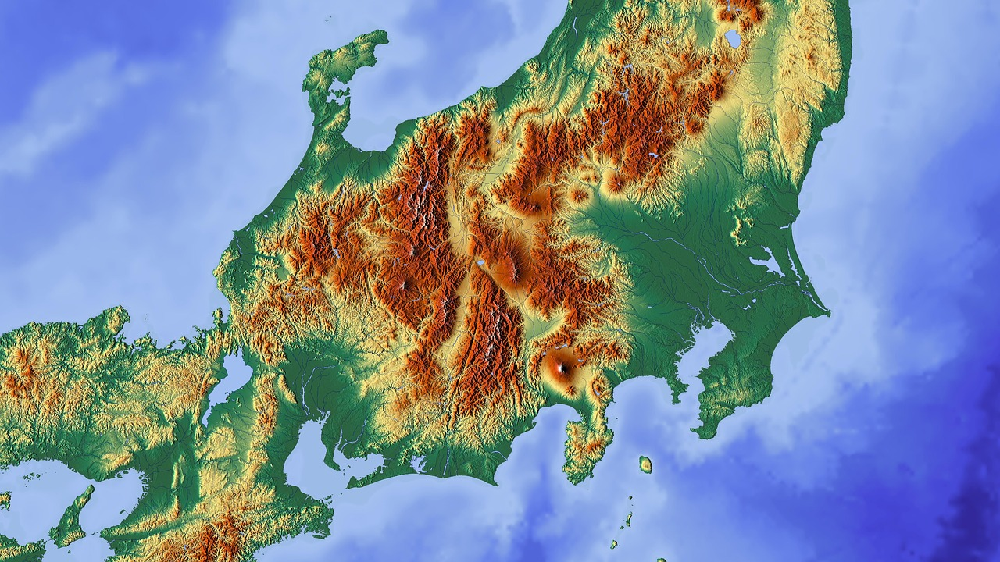

MAP OF JAPAN
important cities

OVERVIEW


TOPOGRAPHY
of Japan
>> About 73% of Japan is mountainous, with a mountain range running through each of the main islands. Japan's highest mountain is Mount Fuji, with an elevation of 3,776 m (12,388 ft). Japan's forest cover rate is 68.55% since the mountains are heavily forested
>> Since there is little level ground, many hills and mountainsides at lower elevations around towns and cities are often cultivated. As Japan is situated in a volcanic zone along the Pacific deeps, frequent low-intensity earth tremors and occasional volcanic activity are felt throughout the islands

OCEANOGRAPHY
of Japan
>> Japan's sea territory is 4,470,000 km2 (1,730,000 sq mi). Japan ranks fourth with its exclusive economic zone ocean water volume from 0 to 2,000 m (6,600 ft) depth. Japan ranks fifth with sea volume of 2,000-3,000 meters, fourth with 3,000-4,000 meters, third with 4,000-5,000 meters and first with volume of 5,000 to over 6,000 meters.
>> There are large quantities of marine life and mineral resources in the ocean and seabed of Japan. At a depth of over 1,000 m (3,300 ft) there are minerals such as manganese nodules, cobalt in the crust and hydrothermal deposits.
CLIMATE
of Japan
>> Japan has four distinct seasons with a climate ranging from subarctic in the north to subtropical in the south. Conditions are different between the Pacific side and the Sea of Japan side. Northern Japan has warm summers and very cold winters with heavy snow on the Sea of Japan side and in mountainous areas.
>> Eastern Japan has hot and humid summers and cold winters with very heavy snow on the Sea of Japan side and in mountainous areas. Western Japan has very hot and humid summers (with temperatures sometimes reaching 35 oC or above) and moderate cold winters. Okinawa and Amami have a subtropical oceanic climate. These areas have hot and humid summers (with temperatures rarely reaching 35 oC or above) and mild winters.

NATIONAL PARKS